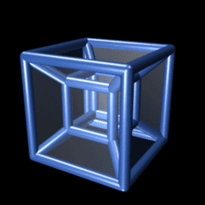

In den 80ern habe ich selbst mal einen auf dem ZX-Spectrum
(falls das noch jemandem etwas sagt) in Basic gebastelt.
Das Ergebnis war zunächst befriedigend aber dann auch irgendwie enttäuschend.
Man sieht immer nur sechs merwürdig verzerrte 3D-Würfel, die sich seltsam durchdringen.
Wirklich 4D zu empfinden, scheint schwierig zu sein...
Doch wie ist es mit der elementareren Frage:
Wie würden ganz normale 3D-Objekte, betrachtet mit ganz normalen 3D-Augen, aussehen,
wenn man sie von einer 4D-Position aus betrachten könnte?
Auf diese Überlegung hat mich der Roman Quantum Space von Douglas Phillips gebracht.
Zum Warmwerden folgen wir den Spuren von Edwin Abbott. In seiner berühmten Novelle Flatland
zeigt Abbott einfühlsam, wie enorm schwierig es für 2D-Menschen wäre,
sich die dritte Dimension vorzustellen.
Bleibt zu überlegen, ob eine höhere räumliche Dimensionen nur Gehirnakrobatik ist
oder ob es sie geben kann oder gar geben muss? Dazu habe ich einen Essay über die
Absurdität der Quantenwelt geschrieben. Wären 4D-Wurmlöcher ein Ausweg aus dem
Dilemma der "Spukhaften Fernwirkung", wie es Einstein formulierte?
Wenn Sie die Simulation ausprobieren, gehen Sie für einen maximalen Effekt bitte
möglichst langsam vor. Die Simulation erfolgt in sechs Szenen.
Versuchen Sie in jeder Szene alles gut zu verstehen.
Lesen Sie den begleitenden Text und kombinieren Sie alle Parametereinstellungen.
Viel Vergnügen!
Oliver Bringmann
{kind=link}